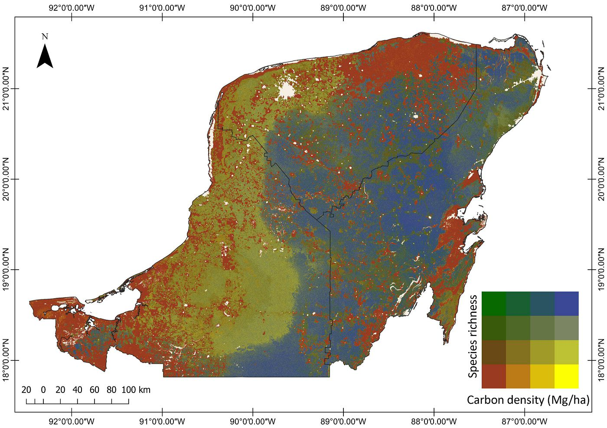
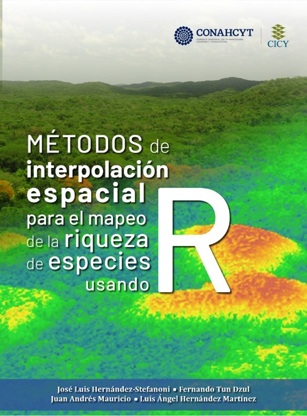
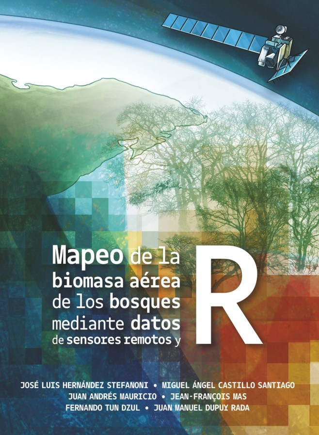

Nota: Los PDFs de los artículos y libros pueden descargarse desde mi cuenta de ResearchGate. Además, pueden solicitarlos a jl_stefanoni@cicy.mx

Artículos Indizados
2026
- Suárez-Fernández, G. E., Hernández-Stefanoni, J. L., Arias, P., Lorenzo, H., & Martínez-Sánchez, J. (2026). Assessing road-proximity patterns of biomass and modeled species richness in tropical dry forests. Forest Ecology and Management, 619, 124081.
- Hernández-Martínez, L. A., Hernández-Stefanoni, J. L., Medel-Narváez, A., Portillo-Quintero, C., Cabada-Tavares, C. A., Lim-Vega, C., & Dupuy-Rada, J. M. (2026). Challenges and solutions for reducing bias in forest inventory-based estimates of aboveground biomass in drylands. European Journal of Forest Research, 145(4), 81.
- Angélica F Resende, Lourens Poorter, Fabio AR Matos, Frans Bongers, Ricardo César, Gustavo Heringer, Iris Hordijk, Catarina C Jakovac, Masha T van der Sande, Robin L Chazdon, Daisy H Dent, Géraldine Derroire, Juan M Dupuy-Rada, Alfredo Fantini, Geraldo W Fernandes, José Luis Hernández-Stefanoni, Peter Hietz, Madelon Lohbeck, Natalia Norden, Jorge Ruíz, Marcelo Tabarelli, Hans FM Vester, Pedro Manuel Villa, Bruno X Pinho, Danaë MA Rozendaal, Bráulio A Santos, T Mitchell Aide, Jarcilene S de Almeida-Cortez, Angélica María Almeyda Zambrano, Esteban Alvarez-Davila, Mário M Espírito-Santo, Justin M Becknell, Eben N Broadbent, Carolina Castellano-Castro, Jérôme Chave, Daisy Christiane Zambiazi, Saara J DeWalt, Maria C Fandiño, Jefferson S Hall, Alma Johanna Hernández, Álvaro Idárraga, André B Junqueira, Deborah Kennard, Susan G Letcher, René López-Camacho, Miguel Martínez-Ramos, Jorge A Meave, Felipe Melo, Rita Mesquita, Francisco Mora, Sandra C Müller, Yule RF Nunes, Edgar Ortiz-Malavassi, Marielos Peña-Claros, Daniel Piotto, Arturo Sanchez-Azofeifa, Naomi B Schwartz, Alexandre Siminski, Heitor Mancini Teixeira, Maria Uriarte, Michiel van Breugel, Maria DM Veloso, Ima CG Vieira, G Bruce Williamson, Kátia J Zanini, Pedro HS Brancalion . (2026). Non-native and invasive tree species are abundant in neotropical secondary forest but decline over time. Nature Plants, 1-13.
- Peña-Lara, V. A., Dupuy-Rada, J. M., Fernández-Concha, G. C., Sanaphre-Villanieva, L., Angulo, D. F., & Hernández-Stefanoni, J. L. (2026). Remote sensing-based assessment of alpha and beta diversity for mapping priority conservation areas in the Yucatán Peninsula. Remote Sensing Applications: Society and Environment, 102103.
- Hernández-Martínez, L. A., Hernández-Stefanoni, J. L., Medel-Narváez, A., Portillo-Quintero, C., Lim-Vega, C., & Dupuy-Rada, J. M. (2026). Sampling Bias in Dryland National Forest Inventories: Implications for Floristic Diversity Estimates. Forests, 17(4), 465.
- Gabriela Reyes-Palomeque, Juan Andrés-Mauricio, Luis A Hernández-Martínez, Victor Peña-Lara, Fernando Tun-Dzul, José Luis Hernández-Stefanoni (2026). Enhancing Aboveground Biomass Estimation in Tropical Dry Forests with GEDI, Sentinel-1/2 and National Forest Inventory Data. Remote Sensing Applications: Society and Environment, 41, 101897
2025
- Hernández-Martínez, L. A., Dupuy-Rada, J. M., Medel-Narváez, A., Portillo-Quintero, C., & Hernández-Stefanoni, J. L. (2025). Improving aboveground biomass density mapping of arid and semi-arid vegetation by combining GEDI LiDAR, Sentinel-1/2 imagery and field data. Science of Remote Sensing, 11, 100204.
- Jucker, T., Fabian Jörg Fischer, Jérôme Chave, David A Coomes, John Caspersen, Arshad Ali, Grace Jopaul Loubota Panzou, Ted R Feldpausch, Daniel Falster, Vladimir A Usoltsev, Toby D Jackson, Stephen Adu-Bredu, Luciana F Alves, Mohammad Aminpour, Bhely Angoboy Ilondea, Niels PR Anten, Cécile Antin, Yousef Askari, Narayanan Ayyappan, Lindsay F Banin, Nicolas Barbier, John J Battles, Hans Beeckman, Yannick E Bocko, Ben Bond-Lamberty, Frans Bongers, Samuel Bowers, Michiel Van Breugel, Arthur Chantrain, Rajeev Chaudhary, Jingyu Dai, Michele Dalponte, Kangbéni Dimobe, Jean-Christophe Domec, Jean-Louis Doucet, Juan Manuel Dupuy Rada, Remko A Duursma, Moisés Enríquez, Karin Y van Ewijk, William Farfán-Rios, Adeline Fayolle, Marco Ferretti, Eric Forni, David I Forrester, Hammad Gilani, John L Godlee, Matthias Haeni, Jefferson S Hall, Jie-Kun He, Andreas Hemp, José L Hernández-Stefanoni, Steven I Higgins, Robert J Holdaway, Kiramat Hussain, Lindsay B Hutley, Tomoaki Ichie, Yoshiko Iida, Hai-Sheng Jiang, Puspa Raj Joshi, Hasan Kaboli, Maryam Kazempour Larsary, Tanaka Kenzo, Brian D Kloeppel, Takashi S Kohyama, Suwash Kunwar, Shem Kuyah, Jakub Kvasnica, Siliang Lin, Emily R Lines, Hongyan Liu, Craig Lorimer, Jean-Joël Loumeto, Yadvinder Malhi, Peter L Marshall, Eskil Mattsson, Radim Matula, Jorge A Meave, Sylvanus Mensah, Xiangcheng Mi, Stéphane T Momo, Glenn R Moncrieff, Francisco Mora, Rodrigo Muñoz, Sarath P Nissanka, Zamah Shari Nur Hajar, Kevin L O’hara, Steven Pearce, Raphaël Pelissier, Pablo L Peri, Pierre Ploton, Lourens Poorter, Mohsen Javanmiri Pour, Hassan Pourbabaei, Sabina C Ribeiro, Casey Ryan, Anvar Sanaei, Jennifer Sanger, Michael Schlund, Giacomo Sellan, Alexander Shenkin, Bonaventure Sonké, Frank J Sterck, Martin Svátek, Kentaro Takagi, Anna T Trugman, Matthew A Vadeboncoeur, Ahmad Valipour, Mark C Vanderwel, Alejandra G Vovides, Peter Waldner, Weiwei Wang, Li-Qiu Wang, Christian Wirth, Murray Woods, Wenhua Xiang, Fabiano de Aquino Ximenes, Yaozhan Xu, Toshihiro Yamada, Miguel A Zavala, Niklaus E Zimmermann E. (2025). The global spectrum of tree crown architecture. Nature communications, 16(1), 1-16.
- Robles-Archundia, D. A., López-Vivas, J. M., León-Cisneros, K., Vargas-Betancourt, F., Lara-Uc, M. M., Hernández-Stefanoni, J. L., & Hernández-Martínez, L. Á. (2025). Evaluación del Impacto del huracán Lorena (2019) en el manglar del Archipiélago Espíritu Santo, México mediante imágenes Sentinel-2. Revista de Teledetección, (65).
2024
- Ocaño-Silveira, C. E., Valdez-Lazalde, J. R., Duno-de Stefano, R., & Hernández-Stefanoni, J. L. (2024). Identificación de áreas con alta biomasa aérea y alta riqueza de especies en bosques nativos del nordeste de Uruguay. Revista de Teledetección, (63), 37-52.
- Tadeo Noble, Alfredo Esteban, Edmundo García Moya, Juan Ignacio Valdez Hernández, Lauro López Mata, Mario Luna Cavazos, Héctor Manuel De Los Santos Posadas, y José Luis Hernández-Stefanoni. 2024. «Patrones De Estructura Y Diversidad De Selva Mediana Subperennifolia Bajo Condiciones De gestión Forestal». Revista Mexicana De Ciencias Forestales 15 (81). México, ME:133-59.
- Escobar-López, A., Castillo-Santiago, M. Á., Mas, J. F., Hernández-Stefanoni, J. L., & López-Martínez, J. O. (2024). Identification of coffee agroforestry systems using remote sensing data: a review of methods and sensor data. Geocarto International, 39(1), 2297555.
- Gamboa-Blanco, E. A., Dupuy, J. M., Portillo-Quintero, C. A., Caughlin, T., & Hernández-Stefanoni, J. L. (2024). Effects of successional age, plot size, and tree size on the relationship between diversity and aboveground biomass in tropical dry forests. Plant Ecology, 1-15.
- van der Sande, M. T., Lourens Poorter, Géraldine Derroire, Mario Marcos do Espirito Santo, Madelon Lohbeck, Sandra C. Müller, Radika Bhaskar, Michiel van Breugel, Juan Manuel Dupuy-Rada, Sandra M. Durán, Catarina C. Jakovac, Horacio Paz, Danaë M. A. Rozendaal, Pedro Brancalion, Dylan Craven, Francisco Mora Ardilla, Jarcilene S. Almeida, Patricia Balvanera, Justin Becknell, Bryan Finegan, Ricardo Gomes César, José Luis Hernández-Stefanoni, Deborah Kennard, Susan G. Letcher, Erika Marín-Spiotta, Rodrigo Muñoz, Casandra Reyes-García, Lucía Sanaphre-Villanueva, Luis P. Utrera, Geraldo Wilson Fernandes, Francisco S. Álvarez, Jose Luis Andrade, Felipe Arreola, Vanessa Boukili, George A. L. Cabral, Jerome Chave, Robin Chazdon, Gabriel Colletta, Maria das Dores Magalhães Veloso, Ben de Jong, Edwin Lebrija-Trejos, Vanessa de Souza Moreno, Daisy H. Dent, Saara DeWalt, Elisa Díaz García, Yule Roberta Ferreira Nunes, Vanessa Granda, Jefferson Hall, Rodney Lobo, Omar Lopez, Miguel Martínez Ramos, Jorge A. Meave, Susana Ochoa-Gaona, Everardo V. S. B. Sampaio, Arturo Sanchez-Azofeifa, Heitor Mancini Teixeira, Marisol Toledo, Maria Uriarte, S. Joseph Wright, Kátia Zanini, Frans Bongers. (2024). Tropical forest succession increases trtaxonomic and functional tree richness but decreases evenness. Global Ecology and Biogeography, e13856.
- Castillo-Santiago MA, Edith Mondragon-Vazquez; Flor Rocío Espinosa-Jiménez; Rosa Elena Escobar-Flores, Rafael García-González, Roberto Domínguez-Vera, Sandra Patricia Chanona-Pérez, Jean Francois Mas, José Luis Hernández-Stefanoni. (2024). Estimación de la distribución espacial de los bosques perturbados en Chiapas, México, usando datos satelitales e información auxiliar. Botanical Sciences, 102(3), 779-795. https://doi.org/10.17129/botsci.3461
- Schorn ME, Stephan Kambach, Robin L. Chazdon, Dylan Craven, Caroline E. Farrior, Jorge A. Meave, Rodrigo Muñoz, Michiel van Breugel, Lucy Amissah, Frans Bongers, Bruno Hérault, Catarina C. Jakovac, Natalia Norden, Lourens Poorter, Masha T. van der Sande, Christian Wirth, Diego Delgado, Daisy H. Dent, Saara J. DeWalt, Juan M. Dupuy, Bryan Finegan, Jefferson S. Hall, José L. Hernández-Stefanoni, Omar R. Lopez, Nadja Rüger. Tree demographic strategies largely overlap across succession in Neotropical wet and dry forest communities. Ecology. 2024 Jul;105(7): e4321. DOI: 10.1002/ecy.4321. PMID: 38763891.
- Canto-Sansores, W. G., López-Martínez, J. O., González, E. J., Meave, J. A., Hernández-Stefanoni, J. L., & Macario-Mendoza, P. A. (2024). The importance of spatial scale and vegetation complexity in woody species diversity and its relationship with remotely sensed variables. ISPRS Journal of Photogrammetry and Remote Sensing, 216, 142-153.
2023
- George-Chacon SP, Smallman TL, Dupuy JM, Hernández-Stefanoni JL, Milodowski DT and Williams M (2023) Isolating the effects of land use and functional variation on Yucatán’s forest biomass under global change. Front. For. Glob. Change 6:1204596.
- Reyes-Palomeque, G., Dupuy, J. M., Portillo-Quintero, C. A., Andrade, J. L., Tun-Dzul, F. J., & Hernández-Stefanoni, J. L. (2023). Scale dependency of the effects of landscape structure and stand age on species richness and aboveground biomass of tropical dry forests. iForest-Biogeosciences and Forestry, 16(4), 234.
- Portillo-Quintero, C., Hernandez-Stefanoni, J. L., & Dupuy, J. M. (2023). Forest Clearing Dynamics and Its Relation to Remotely Sensed Carbon Density and Plant Species Diversity in the Puuc Biocultural State Reserve, Mexico. Remote Sensing, 15(13), 3445.
- Nadja Rüger, Markus E. Schorn, Stephan Kambach, Robin L. Chazdon, Caroline E. Farrior, Jorge A. Meave, Rodrigo Muñoz, Michiel van Breugel, Lucy Amissah, Frans Bongers, Dylan Craven, Bruno Hérault, Catarina C. Jakovac, Natalia Norden, Lourens Poorter, Masha T. van der Sande, Christian Wirth, Diego Delgado, Daisy H. Dent, Saara J. DeWalt, Juan M. Dupuy, Bryan Finegan, Jefferson S. Hall, José L. Hernández-Stefanoni, Omar R. Lopez (2023). Successional shifts in tree demographic strategies in wet and dry Neotropical forests. Global Ecology and Biogeography, 32:1002– 1014
- Víctor Arroyo-Rodríguez, Kátia F Rito, Michelle Farfán, Iván C Navía, Francisco Mora, Felipe Arreola-Villa, Patricia Balvanera, Frans Bongers, Carolina Castellanos-Castro, Eduardo LM Catharino, Robin L Chazdon, Juan M Dupuy-Rada, Bruce G Ferguson, Paul F Foster, Noel González-Valdivia, Daniel M Griffith, José L Hernández-Stefanoni, Catarina C Jakovac, André B Junqueira, Bernardus HJ Jong, Susan G Letcher, Filogonio May-Pat, Jorge A Meave, Susana Ochoa-Gaona, Gabriela S Meirelles, Miguel A Muñiz-Castro, Rodrigo Muñoz, Jennifer S Powers, Gustavo PE Rocha, Ricardo PG Rosário, Bráulio A Santos, Marcelo F Simon, Marcelo Tabarelli, Fernando Tun-Dzul, Eduardo van den Berg, Daniel LM Vieira, Guadalupe Williams-Linera, Miguel Martínez-Ramos. (2023). Landscape-scale forest cover drives the predictability of forest regeneration across the Neotropics. Proceedings of the Royal Society B, 290(1990), 20222203.
- Masha T. van der Sande, Jennifer S. Powers, Thom W. Kuyper, Natalia Norden, Beatriz Salgado-Negret, Jarcilene Silva de Almeida, Frans Bongers, Diego Delgado, Daisy H. Dent, Géraldine Derroire, Mario Marcos do Espirito Santo, Juan Manuel Dupuy, Geraldo Wilson Fernandes, Bryan Finegan, Mayra E. Gavito, José Luis Hernández-Stefanoni, Catarina C. Jakovac, Isabel L. Jones, Maria das Dores Magalhães Veloso, Jorge A. Meave, Francisco Mora, Rodrigo Muñoz, Nathalia Pérez-Cárdenas, Daniel Piotto, Esteban Álvarez-Dávila, Yasmani Caceres-Siani, Coralie Dalban-Pilon, Aurélie Dourdain, Dan V. Du, Daniel García Villalobos, Yule Roberta Ferreira Nunes, Arturo Sanchez-Azofeifa and Lourens Poorter (2023). Soil resistance and recovery during neotropical forest succession. Philosophical Transactions of the Royal Society B, 378(1867), 20210074.
2022
- Portillo-Quintero, C., Hernández-Stefanoni, J. L., Reyes-Palomeque, G., & Subedi, M. R. (2022). Novel Approaches in Tropical Forests Mapping and Monitoring–Time for Operationalization. Remote Sensing, 14(20), 5068.
- Escobar-López, A., Castillo-Santiago, M. Á., Hernández-Stefanoni, J. L., Mas, J. F., & López-Martínez, J. O. (2022). Identifying Coffee Agroforestry System Types Using Multitemporal Sentinel-2 Aata and Auxiliary Information. Remote Sensing, 14(16), 3847.
- Jakovac Catarina C., Jorge A. Meave, Frans Bongers, Susan G. Letcher, Juan Manuel Dupuy, Daniel Piotto, Danaë M. A. Rozendaal, Marielos Peña-Claros, Dylan Craven, Braulio A. Santos, Alexandre Siminski, Alfredo C. Fantini, Alice C. Rodrigues, Alma Hernández-Jaramillo, Alvaro Idárraga, André B. Junqueira, Angelica María Almeyda Zambrano, Ben H. J. de Jong, Bruno Ximenes Pinho, Bryan Finegan, Carolina Castellano-Castro, Daisy Christiane Zambiazi, Daisy H. Dent, Daniel Hernán García, Deborah Kennard, Diego Delgado, Eben N. Broadbent, Edgar Ortiz-Malavassi, Eduardo A. Pérez-García, Edwin Lebrija-Trejos, Erika Berenguer, Erika Marín-Spiotta, Esteban Alvarez-Davila, Everardo Valadares de Sá Sampaio, Felipe Melo, Fernando Elias, Filipe França, Florian Oberleitner, Francisco Mora, G. Bruce Williamson, Gabriel Dalla Colletta, George A. L. Cabral, Géraldine Derroire, Geraldo Wilson Fernandes, Hans van der Wal, Heitor Mancini Teixeira, Henricus F. M. Vester, Hernando García, Ima C. G. Vieira, Jaider Jiménez-Montoya, Jarcilene S. de Almeida-Cortez, Jefferson S. Hall, Jerome Chave, Jess K. Zimmerman, Jhon Edison Nieto, Joice Ferreira, Jorge Rodríguez-Velázquez, Jorge RuízJos Barlow, José Aguilar-Cano, José Luis Hernández-Stefanoni, et al. 2022. Strong floristic distinctiveness across Neotropical successional forests. Science Advances 8 (26), eabn1767.
- Tommaso Jucker, Fabian Jörg Fischer, Jérôme Chave, David A Coomes, John Caspersen, Arshad Ali, Grace Jopaul Loubota Panzou, Ted R Feldpausch, Daniel Falster, Vladimir A Usoltsev, Stephen Adu-Bredu, Luciana F Alves, Mohammad Aminpour, Ilondea B Angoboy, Niels PR Anten, Cécile Antin, Yousef Askari, Rodrigo Muñoz Avilés, Narayanan Ayyappan, Patricia Balvanera, Lindsay Banin, Nicolas Barbier, John J Battles, Hans Beeckman, Yannick E Bocko, Ben Bond-Lamberty, Frans Bongers, Samuel Bowers, Thomas Brade, Michiel Van Breugel, Arthur Chantrain, Rajeev Chaudhary, Jingyu Dai, Michele Dalponte, Kangbéni Dimobe, Jean-Christophe Domec, Jean-Louis Doucet, Remko A Duursma, Moisés Enríquez, Karin Y Van Ewijk, William Farfán-Rios, Adeline Fayolle, Eric Forni, David I Forrester, Hammad Gilani, John L Godlee, Sylvie Gourlet-Fleury, Matthias Haeni, Jefferson S Hall, Jie-Kun He, Andreas Hemp, José L Hernández-Stefanoni, Steven I Higgins, Robert J Holdaway, Kiramat Hussain, Lindsay B Hutley, Tomoaki Ichie, Yoshiko Iida, Hai-sheng Jiang, Puspa Raj Joshi, Hasan Kaboli, Maryam Kazempour Larsary, Tanaka Kenzo, Brian D Kloeppel, Takashi Kohyama, Suwash Kunwar, Shem Kuyah, Jakub Kvasnica, Siliang Lin, Emily R Lines, Hongyan Liu, Craig Lorimer, Jean-Joël Loumeto, Yadvinder Malhi, Peter L Marshall, Eskil Mattsson, Radim Matula, Jorge A Meave, Sylvanus Mensah, Xiangcheng Mi, Stéphane Momo, Glenn R Moncrieff, Francisco Mora, Sarath P Nissanka, Kevin L O’hara, Steven Pearce, Raphaël Pelissier, Pablo L Peri, Pierre Ploton, Lourens Poorter, Mohsen Javanmiri Pour, Hassan Pourbabaei, Juan Manuel Dupuy Rada, Sabina C Ribeiro, Casey Ryan, Anvar Sanaei, Jennifer Sanger, Michael Schlund, Giacomo Sellan, Alexander Shenkin, Bonaventure Sonké, Frank J Sterck, Martin Svátek, Kentaro Takagi, Anna T Trugman, Farman Ullah, Matthew A Vadeboncoeur, Ahmad Valipour, Mark C Vanderwel, Alejandra G Vovides, Weiwei Wang, Li-Qiu Wang, Christian Wirth, Murray Woods, Wenhua Xiang, Fabiano de Aquino Ximenes, Yaozhan Xu, Toshihiro Yamada & Miguel A Zavala. (2022). Tallo–a global tree allometry and crown architecture database. Global Change Biology.
- George‐Chacón, S. P., Mas, J. F., Dupuy, J. M., Castillo‐Santiago, M. A., & Hernández‐Stefanoni, J. L. (2021). Mapping the spatial distribution of stand age and aboveground biomass from Landsat time series analyses of forest cover loss in tropical dry forests. Remote Sensing in Ecology and Conservation.
- Carrillo-Niquete, G. A., Andrade, J. L., Valdez-Lazalde, J. R., Reyes-García, C., & Hernández-Stefanoni, J. L. (2022). Characterizing spatial and temporal deforestation and its effects on surface urban heat islands in a tropical city using Landsat time series. Landscape and Urban Planning, 217, 104280.
- Peña-Lara, V. A., Dupuy, J. M., Reyes-Garcia, C., Sanaphre-Villanueva, L., Portillo-Quintero, C. A., & Hernández-Stefanoni, J. L. (2022). Modelling Species Richness and Functional Diversity in Tropical Dry Forests Using Multispectral Remotely Sensed and Topographic Data. Remote Sensing, 14(23), 5919.
- George-Chacón, S. P., Milodowski, D. T., Dupuy, J. M., Mas, J. F., Williams, M., Castillo-Santiago, M. A., & Hernández-Stefanoni, J. L. (2021). Using satellite estimates of aboveground biomass to assess carbon stocks in a mixed-management, semi-deciduous tropical forest in the Yucatan Peninsula. Geocarto International, 37(25) 7659–7680.
2021
- Lourens Poorter, Dylan Craven, Catarina C. Jakovac, Masha T. van der Sande, Lucy Amissah, Frans Bongers, Robin L. Chazdon, Caroline E. Farrior, Stephan Kambach, Jorge A. Meave, Rodrigo Muñoz, Natalia Norden, Nadja Rüger, Michiel van Breugel, Angélica María Almeyda Zambrano, Bienvenu Amani, José Luis Andrade, Pedro H.S. Brancalion, Eben N. Broadbent, Hubert de ForestaShow lessDaisy H. Dent, Géraldine Derroire, Saara J. DeWalt, Juan M. Dupuy, Sandra M. Durán, Alfredo C. Fantini, Bryan Finegan, Alma Hernández-Jaramillo, José Luis Hernández-Stefanoni, Peter Hietz, André B. Junqueira, Justin Kassi N’dja, Susan G. Letcher, Madelon Lohbeck, René López-Camacho, Miguel Martínez-Ramos, Felipe P.L. Melo, Francisco Mora, Sandra C. Müller, Anny E. N’Guessan, Florian Oberleitner, Edgar Ortiz-Malavassi, Eduardo A. Pérez-García, Bruno X. Pinho, Daniel Piotto, Jennifer S. Powers, Susana Rodríguez-Buriticá, Danaë M.A. Rozendaal, Jorge Ruíz, Marcelo Tabarelli, Heitor Mancini Teixeira, Everardo Valadares de Sá Barretto Sampaio, Hans van der Wal, Pedro M. Villa, Geraldo W. Fernandes, Braulio A. Santos, José Aguilar-Cano, Jarcilene S. de Almeida-Cortez, Esteban Alvarez-Davila, Felipe Arreola-Villa, Patricia Balvanera, Justin M. Becknell, George A.L. Cabral, Carolina Castellanos-Castro, Ben H.J. de Jong, Jhon Edison Nieto, Mário M. Espírito-Santo, Maria C. Fandino, Hernando García, Daniel García-Villalobos, Jefferson S. Hall, Alvaro Idárraga, Jaider Jiménez-Montoya, Deborah Kennard, Erika Marín-Spiotta, Rita Mesquita, Yule R.F. Nunes, Susana Ochoa-Gaona, Marielos Peña-Claros, Nathalia Pérez-Cárdenas, Jorge Rodríguez-Velázquez, Lucía Sanaphre Villanueva, Naomi B. Schwartz, Marc K. Steininger, Maria D.M. Veloso, Henricus F.M. Vester, Ima C.G. Vieira, Bruce Williamson, Kátia Zanini, Bruno Hérault (2021). Multidimensional tropical forest recovery. Science, 374(6573), 1370-1376.
- Lourens Poorter, Danaë M. A. Rozendaal, Frans Bongers, de Jarcilene S. Almeida, Francisco S. Álvarez, José Luís Andrade, Luis Felipe Arreola Villa, Justin M. Becknell, Radika Bhaskar, Vanessa Boukili, Pedro H. S. Brancalion, Ricardo G. César, Jerome Chave, Robin L. Chazdon, Gabriel Dalla Colletta, Dylan Craven, Ben H. J. de Jong, Julie S. Denslow, Daisy H. Dent, Saara J. DeWalt, Elisa Díaz García, Juan Manuel Dupuy, Sandra M. Durán, Mário M. Espírito Santo, Geraldo Wilson Fernandes, Bryan Finegan, Vanessa Granda Moser, Jefferson S. Hall, José Luis Hernández-Stefanoni, Catarina C. Jakovac, Deborah Kennard, Edwin Lebrija-Trejos, Susan G. Letcher, Madelon Lohbeck, Omar R. Lopez, Erika Marín-Spiotta, Miguel Martínez-Ramos, Jorge A. Meave, Francisco Mora, Vanessa de Souza Moreno, Sandra C. Müller, Rodrigo Muñoz, Robert Muscarella, Yule R. F. Nunes, Susana Ochoa-Gaona, Rafael S. Oliveira, Horacio Paz, Arturo Sanchez-Azofeifa, Lucía Sanaphre-Villanueva, Marisol Toledo, Maria Uriarte, Luis P. Utrera, Michiel van Breugel, Masha T. van der Sande, Maria D. M. Veloso, S. Joseph Wright, Kátia J. Zanini, Jess K. Zimmerman, and Mark Westoby (2021). Functional recovery of secondary tropical forests. Proceedings of the National Academy of Sciences, 118(49), e2003405118.
- Hernández-Stefanoni, J. L., Castillo-Santiago, M. Á., Andres-Mauricio, J., Portillo-Quintero, C. A., Tun-Dzul, F., & Dupuy, J. M. (2021). Carbon Stocks, Species Diversity and Their Spatial Relationships in the Yucatán Peninsula, Mexico. Remote Sensing, 13(16), 3179.
- Andres-Mauricio, J., Valdez-Lazalde, J.R., George-Chacón, S.P., Hernández-Stefanoni, J.L. 2021. Mapping structural attributes of tropical dry forests by combining Synthetic Aperture Radar and high-resolution satellite imagery data. Applied Vegetation Science, 24:e12580.
- Portillo-Quintero, C., Hernández-Stefanoni, J.L., Reyes-Palomeque, G. and Subedi, M.R., 2021. The Road to Operationalization of Effective Tropical Forest Monitoring Systems. Remote Sensing, 13(7), p.1370.
- Palafox-Juárez, E.B., López-Martínez, J.O., Hernández-Stefanoni, J.L. and Hernández-Nuñez, H., 2021. Impact of urban land-cover changes on the spatial-temporal land surface temperature in a tropical city of Mexico. ISPRS International Journal of Geo-Information, 10(2), p.76.
- Reyes-Palomeque, G., Dupuy, J. M., Portillo-Quintero, C. A., Andrade, J. L., Tun-Dzul, F. J., & Hernández-Stefanoni, J. L. 2021. Mapping forest age and characterizing vegetation structure and species composition in tropical dry forests. Ecological Indicators, 120, 106955.
2020
- Huechacona-Ruiz, A.H.; Dupuy, J.M.; Schwartz, N.B.; Powers, J.S.; Reyes-García, C.; Tun-Dzul, F.; Hernández-Stefanoni, J.L. 2020. Mapping Tree Species Deciduousness of Tropical Dry Forests Combining Reflectance, Spectral Unmixing, and Texture Data from High-Resolution Imagery. Forests, 11, 1234.
- Hernández-Stefanoni, J. L., Castillo-Santiago, M. Á., Mas, J. F., Wheeler, C. E., Andres-Mauricio, J., Tun-Dzul, F., … & Dupuy, J. M. 2020. Improving aboveground biomass maps of tropical dry forests by integrating LiDAR, ALOS PALSAR, climate and field data. Carbon Balance and Management, 15(1), 1-17.
- Loera-Pérez, Joel, José L. Hernández-Stefanoni, and Xavier Chiappa-Carrara. «How do spatial and environmental factors affect the fish community structure in seasonally flooded karst systems?.» Latin american journal of aquatic research 48.2 (2020): 268-279.
2019
- Ochoa-Franco, A. P., Valdez-Lazalde, J. R., de los Santos-Posadas, H. M., Hernández-Stefanoni, J. L., Valdez-Hernández, J. I. & Ángeles-Pérez, G. La densidad, riqueza y composición arbóreas definen parches detectados remotamente en una selva subperennifolia. Revista de Biología. Tropical, 2019. 67(4), 692-707.
- Gabriela Reyes-Palomeque, Juan Manuel Dupuy, Kristofer D Johnson, Miguel Angel Castillo-Santiago, J Luis Hernández-Stefanoni, 2019, Combining LiDAR data and airborne imagery of very high resolution to improve aboveground biomass estimates in tropical dry forests, Forestry: An International Journal of Forest Research, cpz037, https://doi.org/10.1093/forestry/cpz037
- Ochoa-Franco, D. A., Valdez-Lazalde, R. J., Ángeles-Pérez, G.,de los Santos-Posadas, M. H., Hernández-Stefanoni, J.L., Valdez-Hernández, I. J., Pérez-Rodríguez, P. 2019. Beta-Diversity Modeling and Mapping with LiDAR and Multispectral Sensors in a Semi-Evergreen Tropical Forest. Forests 2019, 10(5), 419.
- Poorter, L., Rozendaal, D.M.A., Bongers, F., de Almeida-Cortez, J.S., Almeyda Zambrano, A.M., Álvarez, F.S., Andrade, J.L., Villa, L.F.A., Balvanera, P., Becknell, J.M., Bentos, T.V., Bhaskar, R., Boukili, V., Brancalion, P.H.S., Broadbent, E.N., César, R.G., Chave, J., Chazdon, R.L., Colletta, G.D., Craven, D., de Jong, B.H.J., Denslow, J.S., Dent, D.H., DeWalt, S.J., García, E.D., Dupuy, J.M., Durán, S.M., Espírito Santo, M.M., Fandiño, M.C., Fernandes, G.W., Finegan, B., Moser, V.G., Hall, J.S., Hernández-Stefanoni, J.L., Jakovac, C.C., Junqueira, A.B., Kennard, D., Lebrija-Trejos, E., Letcher, S.G., Lohbeck, M., Lopez, O.R., Marín-Spiotta, E., Martínez-Ramos, M., Martins, S.V., Massoca, P.E.S., Meave, J.A., Mesquita, R., Mora, F., de Souza Moreno, V., Müller, S.C., Muñoz, R., Muscarella, R., de Oliveira Neto, S.N., Nunes, Y.R.F., Ochoa-Gaona, S., Paz, H., Peña-Claros, M., Piotto, D., Ruíz, J., Sanaphre-Villanueva, L., Sanchez-Azofeifa, A., Schwartz, N.B., Steininger, M.K., Thomas, W.W., Toledo, M., Uriarte, M., Utrera, L.P., van Breugel, M., van der Sande, M.T., van der Wal, H., Veloso, M.D.M., Vester, H.F.M., Vieira, I.C.G., Villa, P.M., Williamson, G.B., Wright, S.J., Zanini, K.J., Zimmerman, J.K., Westoby, M. 2019. Wet and dry tropical forests show opposite successional pathways in wood density but converge over time. Nature Ecology & Evolution. DOI: 10.1038/s41559-019-0882-6
- Rozendaal, D. M. A., F. Bongers, T. M. Aide, E. Alvarez-Dávila, N. Ascarrunz, P. Balvanera, J. M. Becknell, T. V. Bentos, P. H. S. Brancalion, G. A. L. Cabral, S. Calvo-Rodriguez, J. Chave, R. G. César, R. L. Chazdon, R. Condit, J. S. Dallinga, J. S. de Almeida-Cortez, B. de Jong, A. de Oliveira, J. S. Denslow, D. H. Dent, S. J. DeWalt, J. M. Dupuy, S. M. Durán, L. P. Dutrieux, M. M. Espírito-Santo, M. C. Fandino, G. W. Fernandes, B. Finegan, H. García, N. Gonzalez, V. G. Moser, J. S. Hall, J. L. Hernández-Stefanoni, S. Hubbell, C. C. Jakovac, A. J. Hernández, A. B. Junqueira, D. Kennard, D. Larpin, S. G. Letcher, J.-C. Licona, E. Lebrija-Trejos, E. Marín-Spiotta, M. Martínez-Ramos,P. E. S. Massoca, J. A. Meave, R. C. G. Mesquita, F. Mora, S. C. Müller, R. Muñoz, S. N. de Oliveira Neto,N. Norden, Y. R. F. Nunes, S. Ochoa-Gaona, E. Ortiz-Malavassi, R. Ostertag, M. Peña-Claros, E. A. Pérez-García, D. Piotto, J. S. Powers, J. Aguilar-Cano, S. Rodriguez-Buritica, J. Rodríguez-Velazquez, M. A. Romero-Romero, J. Ruíz, A. Sanchez-Azofeifa, A. S. de Almeida, W. L. Silver, N. B. Schwartz, W. W. Thomas, M. Toledo, M. Uriarte, E. V. de Sá Sampaio, M. van Breugel, H. van der Wal, S. V. Martins, M. D. M. Veloso, H. F. M. Vester, A. Vicentini, I. C. G. Vieira, P. Villa, G. B. Williamson, K. J. Zanini,J. Zimmerman, L. Poorter, 2019. Biodiversity recovery of Neotropical secondary forests. . Science Advances 5, eaau3114.
- Stephanie P. George-Chacon, Juan Manuel Dupuy, Alicia Peduzzi, J. Luis Hernandez-Stefanoni 2019. Combining high resolution satellite imagery and lidar data to model woody species diversity of tropical dry forests.Ecological Indicators: 101: 975-984,
- Smith, V., Portillo-Quintero, C., Sanchez-Azofeifa, A. and Hernandez-Stefanoni, J.L., 2019. Assessing the accuracy of detected breaks in Landsat time series as predictors of small scale deforestation in tropical dry forests of Mexico and Costa Rica. Remote Sensing of Environment, 221, pp.707-721.
2018
- Nafarrate-Hecht, A. C., Dupuy-Rada, J. M., George-Chacon, S. P., & Hernández-Stefanoni, J. L. (2018). Modelización y mapeo estacional del índice de área foliar en un bosque tropical seco usando imágenes de satélite de alta resolución. Madera y Bosques, 24(3), e2431666. doi: 10.21829/myb.2018.2431666
- Hernández-Stefanoni, J.L., Reyes-Palomeque, G., Castillo-Santiago, M., George-Chacón, S., Huechacona-Ruiz, A., Tun-Dzul, F., Rondon-Rivera, D. and Dupuy, J., 2018. Effects of Sample Plot Size and GPS Location Errors on Aboveground Biomass Estimates from LiDAR in Tropical Dry Forests. Remote Sensing, 10(10), p.1586.
- Maga Gei, Danaë M. A. Rozendaal, Lourens Poorter, Frans Bongers, Janet I. Sprent, Mira D. Garner, T. Mitchell Aide, José Luis Andrade, Patricia Balvanera, Justin M. Becknell, Pedro H. S. Brancalion, George A. L. Cabral, Ricardo Gomes César, Robin L. Chazdon, Rebecca J. Cole, Gabriel Dalla Colletta, Ben de Jong, Julie S. Denslow, Daisy H. Dent, Saara J. DeWalt, Juan Manuel Dupuy, Sandra M. Durán, Mário Marcos do Espírito Santo, G. Wilson Fernandes, Yule Roberta Ferreira Nunes, Bryan Finegan, Vanessa Granda Moser, Jefferson S. Hall, José Luis Hernández-Stefanoni, André B. Junqueira, Deborah Kennard, Edwin Lebrija-Trejos, Susan G. Letcher, Madelon Lohbeck, Erika Marín-Spiotta, Miguel Martínez-Ramos, Jorge A. Meave, Duncan N. L. Menge, Francisco Mora, Rodrigo Muñoz, Robert Muscarella, Susana Ochoa-Gaona, Edith Orihuela-Belmonte, Rebecca Ostertag, Marielos Peña-Claros, Eduardo A. Pérez-García, Daniel Piotto, Peter B. Reich, Casandra Reyes-García, Jorge Rodríguez-Velázquez, I. Eunice Romero-Pérez, Lucía Sanaphre-Villanueva, Arturo Sanchez-Azofeifa, Naomi B. Schwartz, Arlete Silva de Almeida, Jarcilene S. Almeida-Cortez, Whendee Silver, Vanessa de Souza Moreno, Benjamin W. Sullivan, Nathan G. Swenson, Maria Uriarte, Michiel van Breugel, Hans van der Wal, Maria das Dores Magalhães Veloso, Hans F. M. Vester, Ima Célia Guimarães Vieira, Jess K. Zimmerman & Jennifer S. Powers (2018). Legume abundance along successional and rainfall gradients in Neotropical forests. Nature ecology & evolution, 2:1104–1111.
- Gallardo‐Cruz, J. A., Hernández‐Stefanoni, J. L., Moser, D., Martínez‐Yrizar, A., Llobet, S., & Meave, J. A. (2018). Relating species richness to the structure of continuous landscapes: alternative methodological approaches. Ecosphere, 9(5), e02189.
2017
- Tetetla-Rangel, E., Dupuy, J.M., Hernández-Stefanoni, J.L., Hoekstra, P.H. 2017. Patterns and correlates of plant diversity differ between common and rare species in a neotropical dry forest. Biodiversity and Conservation, 26(7):1705–1721.
- Solórzano, J. V., Meave, J. A., Gallardo-Cruz, J. A., González, E. J., & Hernández-Stefanoni, J. L. (2017). Predicting old-growth tropical forest attributes from very high resolution (VHR)-derived surface metrics. International Journal of Remote Sensing, 38(2), 492-513.
- Danaë MA Rozendaal, Robin L Chazdon, Felipe Arreola-Villa, Patricia Balvanera, Tony V Bentos, Juan M Dupuy, J Luis Hernández-Stefanoni, Catarina C Jakovac, Edwin E Lebrija-Trejos, Madelon Lohbeck, Miguel Martínez-Ramos, Paulo ES Massoca, Jorge A Meave, Rita CG Mesquita, Francisco Mora, Eduardo A Pérez-García, I Eunice Romero-Pérez, Irving Saenz-Pedroza, Michiel van Breugel, G Bruce Williamson, Frans Bongers. 2017. Demographic Drivers of Aboveground Biomass Dynamics During Secondary Succession in Neotropical Dry and Wet Forests. Ecosytems 20 (2), 340-353.
2016
- Chazdon Robin; Broadbent Eben N.; Rozendaal Danaë M. A.; Bongers Frans; Almeyda Zambrano Angélica M.; T. Mitchell Aide; P. Balvanera; Becknell Justin; Boukili Vanessa; Brancalion Pedro; Craven Dylan; Cabral George; Jong Ben; Denslow Julie S.; Dent Daisy H.; Dewalt, Saara J.; Dupuy, J.M.; Durán Sandra M.; Espirito-Santo Mario M.; Fandino María C. ; Ricardo G. Cesar; Hall Jefferson; Hernández-Stefanoni, J.L.; Jacovac Catarina; Junqueira André; Kennard Deborah; S.G. Letcher; Lohbeck Madelon; Martinez Ramos Miguel; Massoca Paulo; Meave, J.; Mesquita Rita; Mora Francisco; Muñoz Rodrigo; Muscarella Robert; Nunes Yule; S. Ochoa Gaona; Orihuela-Belmonte Edith; Peña-Claros Marielos; Perez Garcia Eduardo; Piotto Daniel; Powers, J.S.; Rodríguez Veláz. 2016. Carbon sequestration potencial of secon-growth forest regenerationin the Latin American Tropics. Science Advances 2 : e1501639
- Santamaría-Rivero, W., Leyequien, E., Hérnandez-Stefanoni, J.L., Wood, P. 2016. Influence of landscape structure and forest age on the richness and abundance of different bird feeding guilds and forest-dependent birds in a seasonal dry tropical forest of Yucatan, Mexico. Tropical Ecology 57(2): 313-332.
- Lourens Poorter, Frans Bongers, T Mitchell Aide, Angélica M Almeyda Zambrano, Patricia Balvanera, Justin M Becknell, Vanessa Boukili, Pedro HS Brancalion, Eben N Broadbent, Robin L Chazdon, Dylan Craven, Jarcilene S de Almeida-Cortez, George AL Cabral, Ben HJ de Jong, Julie S Denslow, Daisy H Dent, Saara J DeWalt, Juan M Dupuy, Sandra M Durán, Mario M Espírito-Santo, María C Fandino, Ricardo G César, Jefferson S Hall, José Luis Hernandez-Stefanoni, Catarina C Jakovac, André B Junqueira, Deborah Kennard, Susan G Letcher, Juan-Carlos Licona, Madelon Lohbeck, Erika Marín-Spiotta, Miguel Martínez-Ramos, Paulo Massoca, Jorge A Meave, Rita Mesquita, Francisco Mora, Rodrigo Muñoz, Robert Muscarella, Yule RF Nunes, Susana Ochoa-Gaona, Alexandre A de Oliveira, Edith Orihuela-Belmonte, Marielos Peña-Claros, Eduardo A Pérez-García, Daniel Piotto, Jennifer S Powers, Jorge Rodríguez-Velázquez, I Eunice Romero-Pérez, Jorge Ruíz, Juan G Saldarriaga, Arturo Sanchez-Azofeifa, Naomi B Schwartz, Marc K Steininger, Nathan G Swenson, Marisol Toledo, Maria Uriarte, Michiel van Breugel, Hans van der Wal, Maria DM Veloso, Hans FM Vester, Alberto Vicentini, Ima CG Vieira, Tony Vizcarra Bentos, G Bruce Williamson, Danaë MA Rozendaal. 2016. Biomass resilience of Neotropical secondary forests. Nature. 530(7589): 211-214.
- Martinez-Rendis, A., Acosta González, G., Hernández-Stefanoni, J.L. and Arias González, J. E. 2016. Quantifying the reefscape transformation of a coastal Caribbean coral reef during a phase shift and the associated coastal landscape change. Marine Ecology. 37(3): 697–710
2015
- Dai, Z., Johnson, K.D., Birdsey, R.S., Hernandez-Stefanoni, J.L., and Dupuy J.M. 2015. Assessing the effect of climate change on carbon sequestration in a Mexican dry forest in the Yucatan Peninsula. Ecological Complexity 24, 46-56.
- Hernández-Stefanoni, J. L., Johnson, K. D., Cook, B. D., Dupuy, J. M., Birdsey, R., Peduzzi, A., Tun-Dzul, F. 2015. Estimating species richness and biomass of tropical dry forests using LIDAR during leaf-on and leaf-off canopy conditions. Applied Vegetation Science. 18 (4): 724-732.
- Letcher, S. G., Lasky, J. R., Chazdon, R. L., Norden, N., Wright, S. J., Meave, J. A., Pérez-García, E. A., Muñoz, R., Romero-Pérez, E., Andrade, A., Andrade, J. L., Balvanera, P., Becknell, J. M., Bentos, T. V., Bhaskar, R., Bongers, F., Boukili, V., Brancalion, P. H. S., César, R. G., Clark, D. A., Clark, D. B., Craven, D., DeFrancesco, A., Dupuy, J. M., Finegan, B., González-Jiménez, E., Hall, J. S., Harms, K. E., Hernández-Stefanoni, J. L., Hietz, P., Kennard, D., Killeen, T. J., Laurance, S. G., Lebrija-Trejos, E. E., Lohbeck, M., Martínez-Ramos, M., Massoca, P. E. S., Mesquita, R. C. G., Mora, F., Muscarella, R., Paz, H., Pineda-García, F., Powers, J. S., Quesada-Monge, R., Rodrigues, R. R., Sandor, M. E., Sanaphre-Villanueva, L., Schüller, E., Swenson, N. G., Tauro, A., Uriarte, M., van Breugel, M., Vargas-Ramírez, O., Viani, R. A. G., Wendt, A. L., Williamson, G. B. 2015. Environmental gradients and the evolution of successional habitat specialization: a test case with 14 Neotropical forest sites. Journal of Ecology. 103 (5): 1276-1290.
- Rocchini, D., Hernández Stefanoni, J.L., He, K.S: 2015. Advancing species diversity estimate by remotely sensed proxies: a conceptual review. Ecological Informatics, 25: 22-28.
2014
- Hernández-Stefanoni J.L, Dupuy J.M, Johnson J.D, Birdsey R., Tun-Dzul F., Peduzzi A., Caamal-Sosa J.P., Sánchez-Santos G. and López-Merlín D. 2014. Improving Species Diversity and Biomass Estimates of Tropical Dry Forests Using Airborne LiDAR. Remote Sensing. 6(6): 4741-4763.
- Dai, Zhaohua; Birdsey, Richard A; Johnson, Kristofer D; Dupuy, Juan Manuel; Hernandez-Stefanoni, Jose Luis and Richardson, Karen. 2014. Modeling Carbon Stocks in a Secondary Tropical Dry Forest in the Yucatan Peninsula, Mexico. Water, Air, & Soil Pollution 25(4):1925
2013
- López-Martínez, J.O., Sanaphre-Villanueva, L., Dupuy, J.M., Hernández-Stefanoni, J.L., Meave del Castillo., J.A. and Gallardo-Cruz. J.A. 2013. B-Diversity of Functional Groups of Woody Plants in a Tropical Dry Forest in Yucatan. PloS ONE. 8(9): e73660.
- Tetetla-Rangel, E., Hernández-Stefanoni, J.L. and Dupuy, J.M. 2013. Patterns of rare woody species richness: the influence of environment, landscape and spatial structure across different spatial scales. Biodiversity and Conservation. 22:1435-1450
- Essens, T., Hernández-Stefanoni, J.L. 2013. Mapping Lepidoptera and plant alpha-diversity across a heterogeneous tropical dry forest using field and remotely sensed data with spatial interpolation. Journal of Insect Conservation. 17:725–736.
- Castillo-Santiago, M.A., Ghilardi, A., Oyama, K., Hernández-Stefanoni, J.L., Torres, I., Flamenco-Sandoval, A., Fernández, A. and Mas, J.F. 2013. Estimating the spatial distribution of woody biomass suitable for charcoal making from remote sensing and geostatistics in central Mexico. Energy for Sustainable Development 17:177-188.
- López-Martínez, J.O., Hernández-Stefanoni, J.L., Dupuy, J.M. and Meave, J.A. 2013. Partitioning the variation of woody plant β-diversity in a landscape of secondary tropical dry forests across spatial scales. Journal of Vegetation Science 24: 33-45
2012
- Tetetla-Rangel, E., Durán, R., Hernández-Stefanoni, J.L. y Dupuy, J.M. 2012. Distribución espacial de la riqueza de especies leñosas raras de la Península de Yucatán y su relación con las áreas naturales protegidas. Tropical Conservation Science 5(3) 320-339.
- Hernández-Stefanoni, J.L., Gallardo-Cruz, J.A., Meave, J.A., Rocchini, D., Bello-Pineda, J. and López-Martínez, J.O. 2012. Modelling α and β-Diversity in a tropical forest from remotely sensed and spatial data. International Journal of Applied Earth Observation and Geoinformation. 19: 359-368.
- J. Alberto Gallardo-Cruz, Jorge A. Meave, Edgar J. González, Edwin Lebrija-Trejos, Marco A. Romero-Romero, Eduardo A. Pérez-García, Rodrigo Gallardo-Cruz, José Luis Hernández-Stefanoni, Carlos Martorell. 2012. Predicting tropical dry forest successional attributes from space: is the key hidden in image texture?. PLoS ONE 7(2): e30506.
- Dupuy, J.M., Hernández-Stefanoni, J.L., Hernández-Juárez, R., Tetetla-Rangel, E., López-Martínez, J.O., Leyequién-Abarca, E., Tun-Dzul, F.J. and May-Pat, F. 2012. Patterns and Correlates of Tropical Dry Forest Structure and Composition in a Highly Replicated Chronosequence in Yucatan, Mexico. Biotropica, 44(2), 151-162.
2011
- Hernández-Stefanoni, J.L., Gallardo-Cruz, J.A., Meave, J.A. and Dupuy, J.M. 2011. Combining geostadistical models and remotely sensed data to improve tropical plant richness mapping. Ecological Indicators. 11(5):1046-1056.
- Hernández-Stefanoni, J.L., Dupuy, J.M., Tun-Dzul, F. and May-Pat, .F. 2011. Influence of landscape structure and stand age on species richness and biomass of a tropical dry forest across spatial scales. Landscape Ecology. 26:355-370
2010
- Gallardo-Cruz, J.A., Meave, J.A., Pérez-García, E.A. and Hernández-Stefanoni, J.L. 2010. Spatial structure of plant communities in a complex tropical landscape: implications for β-diversity. Community Ecology, 11(2): 2020-210.
2009
- Hernández-Stefanoni, J.L,Dupuy, J.M. and Castillo-Santiago, M.A. 2009. Assessing species density and abundance of tropical trees from remotely sensed data and geoestatistics. Applied Vegetation Science. 12: 398–414.
2008
- Valdez-Ojeda, R., Hernández-Stefanoni, J.L., Ortiz, R., Aguilar-Espinosa, M., Quiros, C.F. and Rivera-Madrid,R. 2008. Assessing morphological and genetic variation in annatto (Bixa orellana L.) by sequence-related amplified polymorphism and cluster analysis. HortSciences 43(7):2013–2017.
- Hernández-Stefanoni, J.L. and Dupuy, J.M. 2008. Effects of landscape patterns on species density and abundance of trees in a tropical subdeciduos forest of the Yucatan Peninsula. Forest Ecology and Management. 255(11):3797-3805.
2007
- Hernández-Stefanoni, J.L. and Dupuy, J.M. 2007. Mapping species density of trees, shrubs and vines in a tropical forest, using field measurements, satellite multiesectral imagery and spatial interpolation. Biodiversity and Conservation 16(13) 3817-3833.
- Bello-Pineda, J. and Hernández-Stefanoni, J.L. 2007. Comparing the performance of two spatial interpolation methods for creating a digital bathymetric model of the Yucatán submerged plataform. Pan-American Journal of Aquatic Sciences 2(3): 247-254.
2006
- Hernández-Stefanoni, J.L. and Ponce-Hernandez, R. 2006. Mapping the spatial variability of plant diversity in a tropical forest: Comparison of spatial interpolation methods. Environmental Monitoring and Assessment. 117:307-334.
- Hernández-Stefanoni, J.L. 2006. The role of landscape patterns of habitat types on plant species diversity of a tropical forest in Mexico. Biodiversity and Conservation. 14: 1441-1457.
- Hernández-Stefanoni, J.L., Bello-Pineda, J. and Valdes-Valadez, G. 2006. Comparing the use of indigenous knowledge with classification and ordination techniques for assessing the species composition and structure of vegetation in a tropical forest. Environmental Management 37(5): 686-702.
2005
- Hernández-Stefanoni, J.L. 2005. Relationships between Landscape Patterns and Species Richness of Trees, Shrubs and Vines in a Tropical Forest. Plant Ecology 179: 53-65
2004
- Hernández-Stefanoni, J.L. and Ponce-Hernandez, R. 2004. Mapping the Spatial Distribution of Plant Diversity Indices Using Multi-spectral Satellite Image Classification and Field Measurements. Biodiversity and Conservation 13: 2599–2621.
- Hernández-Stefanoni, J.L. y Fernández de V, Y. 1996. Una Metodología de Análisis y Diseño Orientado a Objetos. Agrociencia, 30 (3): 427-437.
Artículos no Indizados
- Dupuy, J.M., Hernández-Stefanoni, J.L., Hernández-Juárez, R., Tun-Dzul, F.J. and May-Pat, F. 2012. Efectos del cambio de uso del suelo en la biomasa y diversidad de plantas leñosas en un paisaje de bosque tropical seco en Yucatán. Investigación Ambiental, 4(2), 130-140.
- Hernández C, R., Hernández-Stefanoni, J.L. y Vargas Carballo, R. 1988. Aplicación de la Programación Lineal a la Planeación de la Producción de Triplay. Revista Chapingo, num 60-61: 96-99.
Libros


- Hernández-Stefanoni, J. L., Tun-Dzul, F., Andrés-Mauricio, J. & Hernández-Martínez, L. Á. (2023). Métodos de interpolación espacial para el mapeo de la riqueza de especies usando R. Centro de Investigación Científica de Yucatán, A.C. México. 191 p.
- Hernández-Stefanoni, José Luis, Miguel Ángel Castillo Santiago, Juan Andrés Mauricio, Jean-François Mas, Fernando Tun Dzul, Juan Manuel Dupuy Rada. 2021. Mapeo de la biomasa aérea de los bosques mediante datos de sensores remotos y R. El Colegio de la Frontera Sur y Centro de Investigación Científica de Yucatán, A.C. México. 128 p.
- Hernandez-Stefanoni, J.L., y Dupuy, J.M. (coordinadores). 2012. Planeación de uso del suelo a nivel de paisaje en el sur de Yucatán. Centro de Investigación Científica de Yucatán A.C., ISNB:978-607-7823-11-7, 200 pp.
Capítulos de Libros
- Díaz Perera, Miguel Ángel; Ramírez Pacheco, Anabel Alejandra; Vázquez Tobilla, Rosario; Pérez Robledo, Flor María; Esparza Olguin, Ligia; Reyes-García, Cassandra; Espadas-Manrique, Celene Marisol; Dupuy-Rada, Juan Manuel; Hernández-Stefanoni, José Luis; Acosta-Gonzalez, Gilberto; Hernández-Zepeda, Cecilia; Leal-Bautista, Rosa.M.; Cach Pérez Manuel Jesús; Castillo, Miguel Angel; Caballero-Vazquez, Jose Adan; Hernández de la Cruz, José; Cano-Paz, Fabiola Betsabe; De los Santos-González, Candy Cristina. 2024. El impacto de megaproyectos en sistemas socioecológicos desde una perspectiva transdisciplinaria: el Programa de Desarrollo Integral en los territorios del tren maya. En Martinez-Ramos. M.(coord). Miradas hacia la sustentabilidad México: FCE, Conahcyt, 2024 (Colección Ciencias y Humanidades para México) ISBN: 978-607-16-8808-8.
- Hernández Martínez L. Á., Cervantes Mendívil T., Villanueva Díaz J., Puente Valenzuela C.O. y Hernández Stefanoni J.L. 2022. Modelos alométricos de volumen comercial, biomasa y contenido de carbono en mezquitales del noroeste de México. En Hernández-Martínez L.A. y J.L. González-Barrios (Coord.). 2022. Estudios biométricos y de captura de carbono en mezquitales del noroeste de México. Instituto Nacional de Investigaciones Forestales, Agrícolas y Pecuarias. Centro de Investigación Regional Noroeste. Campo Experimental Todos Santos. Ciudad de México, México. Libro Científico No. 1. 111 p. ISBN: 978-607-37-1506-5
- Leyequién, Eurídice; Hernández-Stefanoni, José Luis; Santamaría-Rivero, Waldemar; Dupuy-Rada, Juan Manuel; Chable-Santos, Juan Bautista. 2014. Effects of Tropical Successional Forests on Bird Feeding Guilds. In (Nobukazu Nakagoshi and Jhonamie A. Mabuhay, eds.) Designing Low Carbon Societies in Landscapes, Springer Japan. ISBN: 978-4-431-54818-8 (print), 978-4-431-54819-5 (online), pp 177-202.
- Hernandez-Stefanoni, J.L., Delgado-carranza, M. del C. y Espadas-Manrique, C. 2011. Técnicas de interpolación especial y Geoestadística. En Bautista-Zuñiga, F. Técnicas de Muestreo para Manejadores de Recursos Naturales. Segunda Edición. UNAM, México, ISBN 978-607-02-2127-9, pp 705-734.
- Hernández-Stefanoni, J.L. 2006. The role of landscape patterns of habitat types on plant species diversity of a tropical forest in México. In (D.L. Hawksworth and A.T. Bull, eds.) Forest Diversity and Management. Series: Topics in Biodiversity and Conservation, Vol. 2. Springer-Verlag. ISBN: 978-1-4020-5207-1 (Print) 978-1-4020-5208-8 (Online), pp 381-397
- Andres-Mauricio, J., Dupuy-Rada, J. M., Parker, G., Portillo-Quintero, C. A., & Hernández-Stefanoni, J. L. (2025). 4 Aboveground and Biomass Change Biomass Estimates of Tropical Dry Forest Using Aerial and Terrestrial LiDAR. In Remote Sensing of Tropical Dry Forests in the Americas: Ecology, Conservation, and Management. Sanchez-Azofeifa, A. (Editor). CRC Press. https://doi.org/10.1201/b15417
- Huechacona-Ruiz, A.H., Hernández-Stefanoni, J. L. & Dupuy-Rada, J. M (2025). 10 Intra- and Interannual Variation in Tree Deciduousness in a Tropical Dry Forest in Yucatán, México: Effects of Successional Age and Topography. In Remote Sensing of Tropical Dry Forests in the Americas: Ecology, Conservation, and Management. Sanchez-Azofeifa, A. (Editor). CRC Press. https://doi.org/10.1201/b15417
- Portillo-Quintero, C. A., Carpio, C., Boren-Alpizar, A., Gill, N., J., Hernández-Stefanoni, J. L. & Dupuy-Rada, J. M., (2025). 11 Resilience of Tropical Dry Forests Management Systems in the Yucatan Peninsula. In Remote Sensing of Tropical Dry Forests in the Americas: Ecology, Conservation, and Management. Sanchez-Azofeifa, A. (Editor). CRC Press. https://doi.org/10.1201/b15417
Artículos de Memorias en Extenso
- Hernández-Stefanoni, J.L., Dupuy-Rada., J.M., Tun-Dzul, F. and May-Pat F. 2010. Effects of landscape structure and stand age on species richness and biomass in a tropical dry forest, 641-646. In (J.C. Azevedo, M. Feliciano, J. Castro & M.A. Pinto, eds.) Forest Landscapes and Global Change-New Frontiers in Management, Conservation and Restoration. Proceedings of the IUFRO Landscape Ecology Working Group International Conference, September 21-27, 2010, Bragança, Portugal. ISBN: 978-972-745-110-4.
- Tetetla-Rangel, E., Hernández-Stefanoni, J.L., and Dupuy-Rada, J.M. 2010. Relationships among landscape structure, climate and rare woody species richness in the tropical forests of the Yucatan Peninsula, Mexico, 317-322. In (J.C. Azevedo, M. Feliciano, J. Castro & M.A. Pinto, eds.) Forest Landscapes and Global Change-New Frontiers in Management, Conservation and Restoration. Proceedings of the IUFRO Landscape Ecology Working Group International Conference, September 21-27, 2010, Bragança, Portugal. ISBN: 978-972-745-110-4.
- López-Martinez, J.O., Hernández-Stefanoni, J.L., and Dupuy-Rada, J.M. 2010. Ecological factors influencing beta diversity at two spatial scales in a tropical dry forest of the Yucatán Peninsula, Mexico, 245-250. In (J.C. Azevedo, M. Feliciano, J. Castro & M.A. Pinto, eds.) Forest Landscapes and Global Change-New Frontiers in Management, Conservation and Restoration. Proceedings of the IUFRO Landscape Ecology Working Group International Conference, September 21-27, 2010, Bragança, Portugal. ISBN: 978-972-745-110-4.